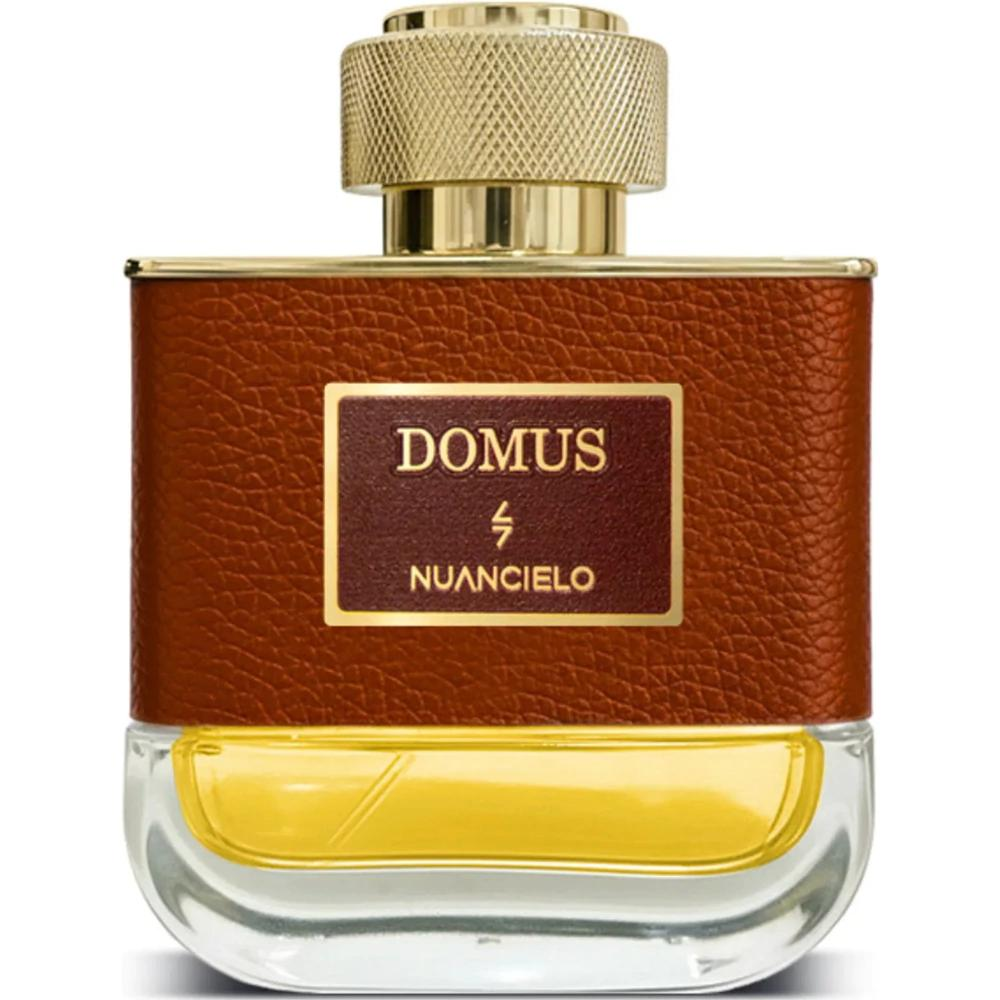
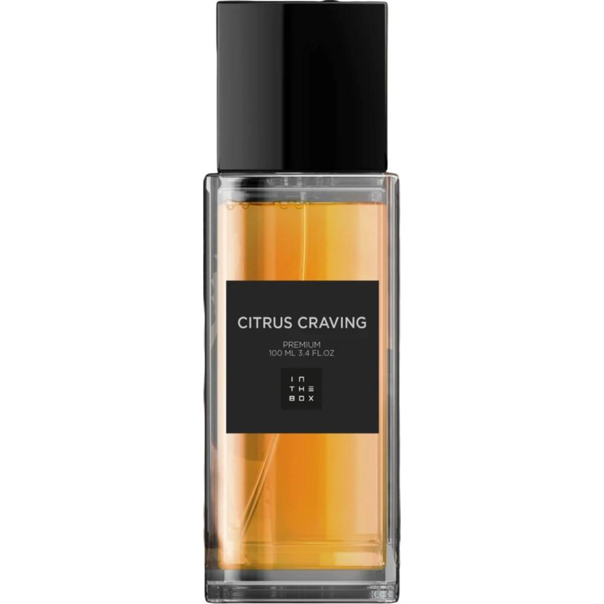
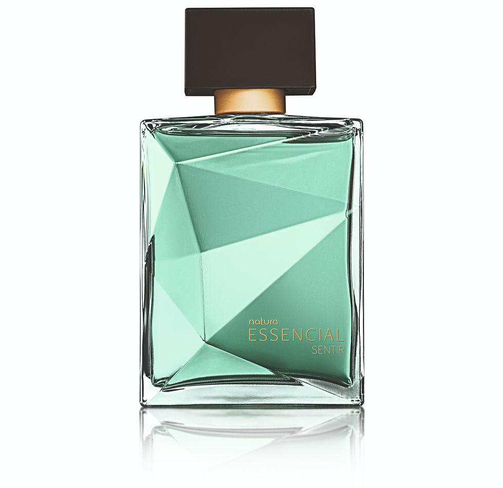
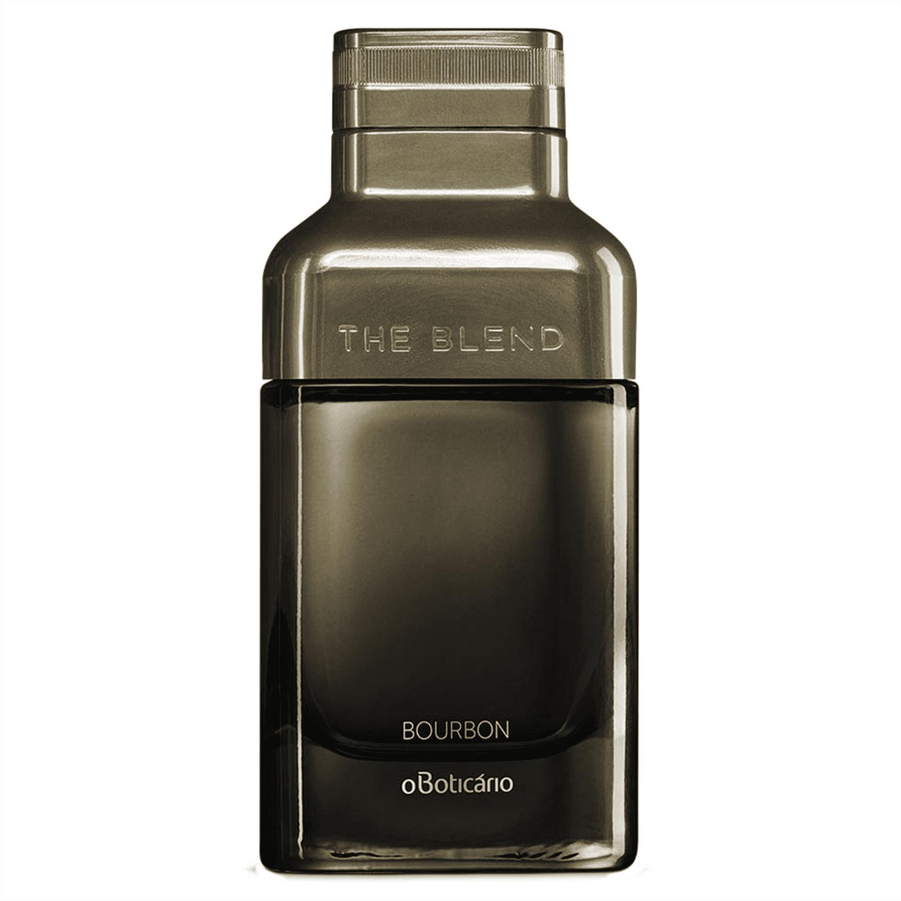

Acessibilidade
Diversidade de preços e facilidade de aquisição no mercado brasileiro.
Criatividade brasileira, identidade olfativa e sofisticação acessível.
A perfumaria nacional é representada por marcas brasileiras que desenvolvem e comercializam fragrâncias para diferentes públicos e preferências olfativas.
O mercado brasileiro possui tanto marcas que investem em criações autorais, como Natura e O Boticário, quanto marcas conhecidas por desenvolver fragrâncias inspiradas, como Nuancielo e In The Box.
Essas duas propostas demonstram a diversidade da perfumaria brasileira, oferecendo desde composições originais até alternativas acessíveis a perfumes internacionais.
Diversidade de preços e facilidade de aquisição no mercado brasileiro.
Desenvolvimento de fragrâncias originais e exploração de diferentes ingredientes e propostas olfativas.
Alternativas nacionais que podem oferecer qualidade e desempenho por preços competitivos.
Os contratipos são fragrâncias desenvolvidas com o objetivo de apresentar uma experiência olfativa semelhante à de perfumes já existentes no mercado.
Diferentemente de falsificações, os contratipos são comercializados com identidade, marca e embalagem próprias, sem se apresentarem como o produto original.

Uma fragrância de perfil adocicado, ambarado e especiado, inspirada no Althaïr da casa de nicho Parfums de Marly.
Ambarado e gourmand Site da marca ↗
Uma fragrância de proposta fresca e cítrica, inspirada no Eros Energy, da marca designer Versace.
Cítrico e fresco Site da marca ↗A perfumaria autoral busca desenvolver fragrâncias com identidade própria, sem ter como objetivo principal reproduzir um perfume já existente.

Uma criação da perfumaria brasileira que explora a sofisticação e a identidade olfativa da linha Essencial.
Criação autoral Site oficial ↗
Uma fragrância sofisticada que combina nuances quentes, especiadas e adocicadas, com destaque para a baunilha bourbon.
Ambarado e especiado Site oficial ↗Entenda como os perfumes são construídos, suas concentrações, famílias olfativas e pirâmides de notas.
Continuar explorando →